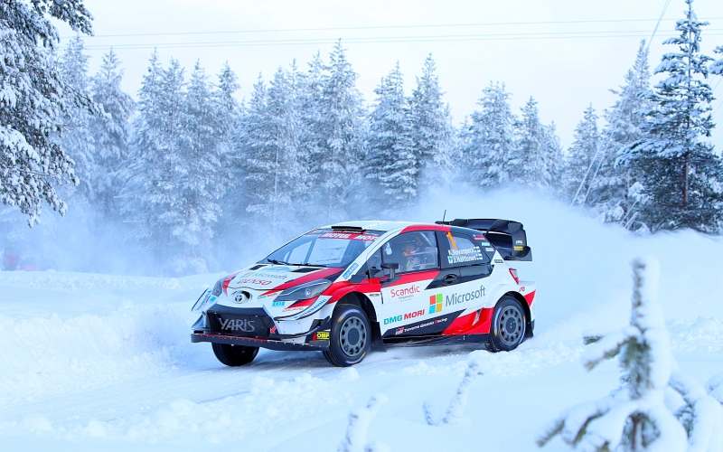
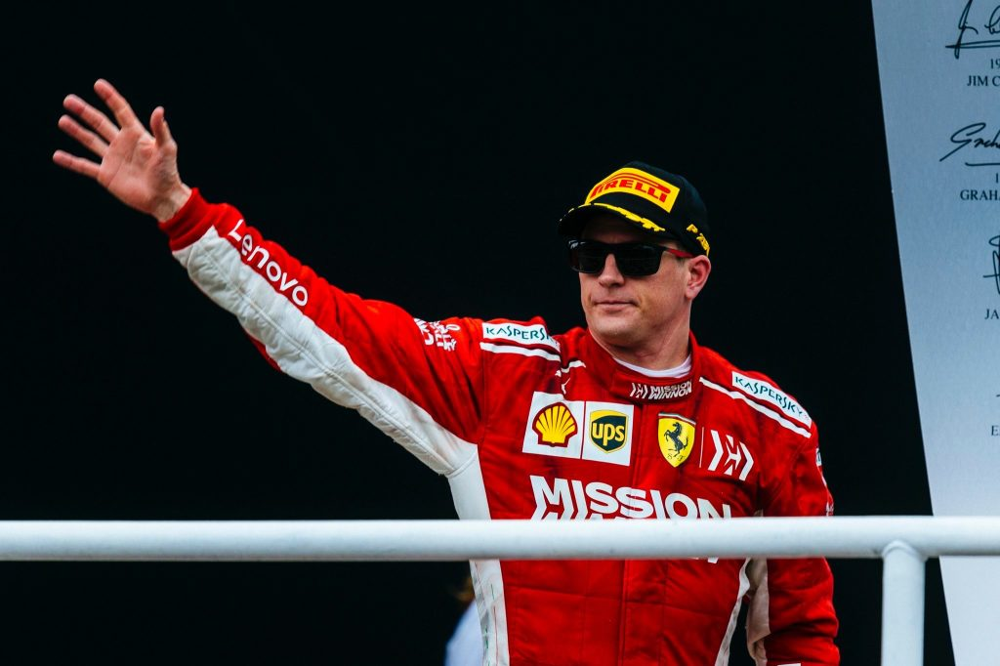

Sport:

- Motorsportok: Rali
-
Finnországnak több híres sportolója van a motorsportokban. A rali
nemzeti sportnak számít, a legtöbb rali világbajnok (7) és egyben rali
világbajnoki cím (14) is a finnekhez köthető, az 1977 óta megnyerhető
WRC rali VB-i trófeák csaknem felét finn nemzetiségű pilóta nyerte el.
A WRC (Rali Világbajnokság) platinás versenyének számít a Finn Rally.
-
A WRC finn világbajnokai: Markku Alén (1978), Ari Vatanen (1981), Hannu
Mikkola (1983), Timo Salonen (1985), Juha Kankkunen
(1986,1987,1991,1993), Tommi Mäkinen négyszeres rally világbajnok
(1996-1999), Marcus Grönholm kétszeres rally világbajnok (2000, 2002).
IRC (Interkontinentális Rali Bajnokság), vagyis a 2. legplatinásabb
rali versenysorozat 2010-es világbajnoka a finn Juho Hänninen.
-
A finnek jó teljesítőképessége a raliban feltehetően annak köszönhető,
hogy a csúszós útviszonyok kezelését a lehető legalkalmasabb felületen
sajátíthatják el; a télen befagyó számtalan tó jegén való gyakorlásból
szerzik tapasztalataikat, ez amolyan szabadidős tevékenység errefelé a
fiatalok körében. Jari-Matti Latvala és Mikko Hirvonen a jelenlegi WRC
mezőny tagjai, a Ford WRC csapatával.

- Motorsport: Formula 1
-
A Forma 1-ben is kiemelkedően teljesítenek a finnek, a nemzetek közül a britek után és a brazilokkal holtversenyben ők rendelkeznek a legtöbb F1-es világbajnokkal is (3). Keke Rosberg (1982) Williams csapattal, Mika Häkkinen (1998,1999) a McLaren-Mercedesszel, Kimi Räikkönen (2007) a Scuderia Ferrarival lett világbajnok. Mika Salo 1994 és 2002 között versenyzett a „száguldó cirkuszban”. Kimi Räikkönen a világ 2. legjobban kereső sportolójának számít.
- Olimpia
-
Finnországban, Helsinkiben rendezték az 1952-es nyári olimpiát, melyen a magyar Aranycsapat nyerte a futballtornát. Ezen az olimpián további 15 aranyérmet szerzett Magyarország. Finnországnak eddig 145 aranyérme van. A nyári játékokon az atlétika, a téli játékokon pedig a sífutás a legeredményesebb sportág. Paavo Nurmi a finn „csodafutó”, becenevén a „Repülő Finn” a világ harmadik legeredményesebb olimpikonja, kilenc arany és három ezüst éremmel.
- Jégkorong
-
Finnország nemzeti sportja a jégkorong. Több mint 66 ezer igazolt játékos van az országban. Háromszor nyertek világbajnokságot, 1995-ben, 2011-ben és 2019-ben. Jelenleg olimpiai bajnokok, hisz a Tokiói olimpián (2022) aranyérmesek lettek.